A small app for the moments you'd rather not spend alone.
Quick question
When was the last time you actually spent a holiday with someone? Not texting. Not a video call. Just being around a person, doing something together.
If you had to think about it, you're not alone. I had to think too.
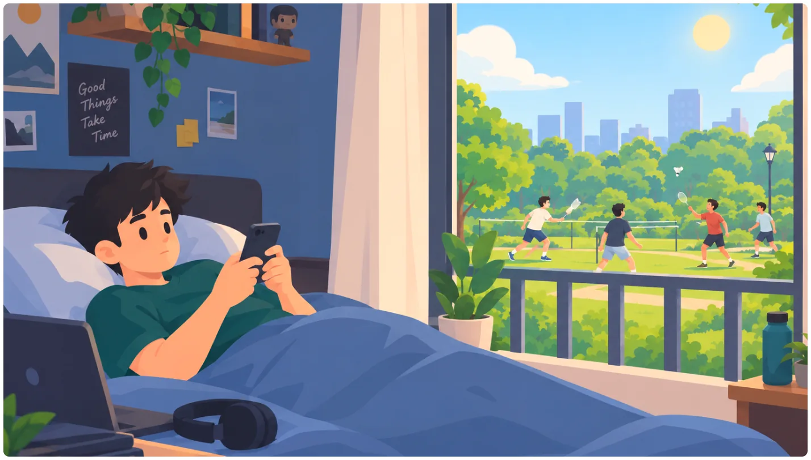
Designation
Product Designer
Duration
1 Month Sprint
Screens
30+ High Fidelity
User Flows
3 Complete
My Toolkit
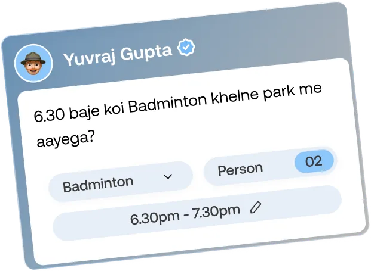
The Problem
My Saturdays
When I started working, my friends were in different towns. Weekdays kept me busy. Weekends were the problem.
Saturday would come and I'd be in my room, scrolling. Reels, feeds, repeat. By evening the day was gone and I couldn't remember a single moment from it.
One evening I stepped out for a walk around my neighborhood. There was a girl playing badminton alone, hitting the shuttle against a wall.
The problem isn't that there are no people nearby. It's that there's no simple way to find someone for a quick game, a walk or a jog.
Maybe this is you too
People who moved to a new city for a job. Everyone around you is busy, and your friends are far away from you.
So I designed Nook
Nook is an activity companion app that connects you with people nearby who want to do the same thing, at the same time.
Must Have
Why
Post an activity in a few taps
Going from bored to playing should be quicker than opening Instagram.
Request & accepts
No random DMs. You only talk to people you've agreed to meet.
Activity based explore
Nobody can browse or track peoples.
Authenticity of a person
Phone OTP + Video verification
Report & Remove
A way out at any moment.
My Role
Sole designer, from idea to prototype. No brief, no client, no team. Just a Saturday evening, a question I couldn't shake off, and a blank Figma file.
I defined the problem, planned the flows, designed the UI, mapped the edge cases and wrote notes for whoever builds it. Every decision here was mine, including the ones I'm still not sure about.
Research and Early Thinking
Questions I started with
What's the least I'd need to share and still be free to join or leave?
How do you find someone nearby without anyone finding you?
What makes you say yes to a plan with someone new?
Share less, leave freely
No phone numbers, ever shared. You talk only in the app, like Uber keeps numbers hidden.
Leave any activity quietly, no reason needed, like leaving a Instagram group silently.
Trust without a face
After a meetup, only friendly tags like "best humor" or "Fun to play with", no star ratings.
Every plan comes with a live photo of the spot or activity, taken right then. No gallery uploads, so what you see is what's happening.
Reveal only after a yes
Activities never reveal your home, but showing how far from you.
Gone when it's over, an activity and its chats disappear once it ends.
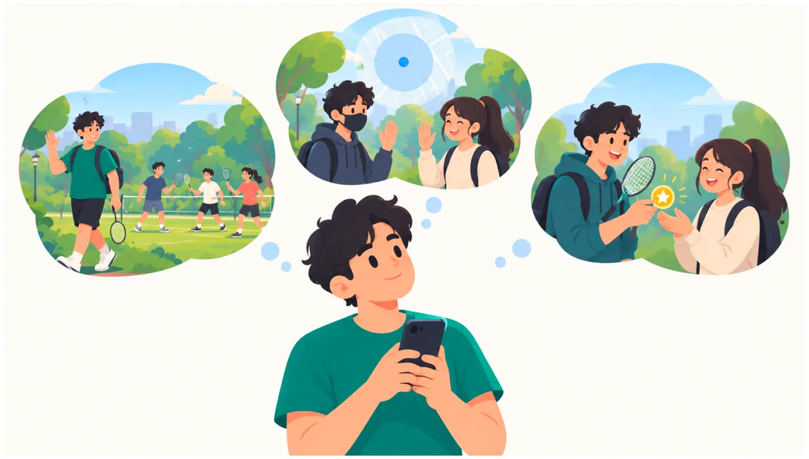
Insights
In this phase focus on ships around these three features.
Freedom/control
Privacy
Trust
Onboarding Flow
Onboarding had a tricky job: prove you're a real person while asking for as little as possible. Nothing else is needed to get started, and permissions are asked only when a feature needs them.
Insights
Two quick steps felt lighter than any profile setup. Users were exploring plans before they had time to second guess. Preferences are asked in the moment, while browsing or searching, so every question has a clear reason.
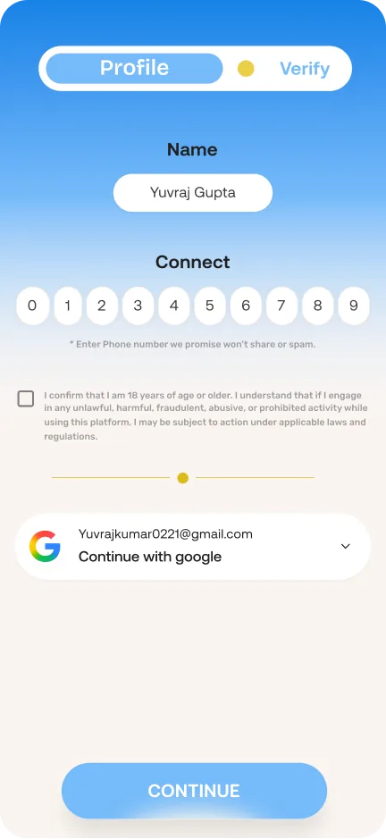
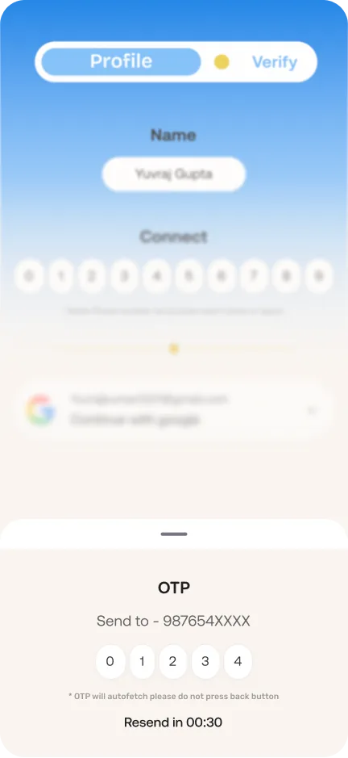
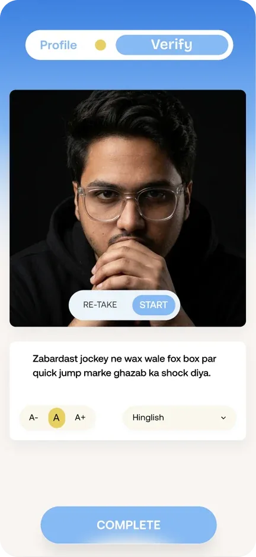
Discovery Exploration
Anyone who opens Nook already has something in mind. A walk, a run, a game. They're just looking for a partner for that one thing. So instead of dropping them into a feed to scroll, the first screen asks them to start with their own plan, and shows that others nearby are around to join. Exploring and joining are always one tap away, but the first move is theirs.
What I found
Nobody wants to be the first one in an empty room. People act when they sense others are around, even if they can't see them yet.
Strangers feel safer in small numbers. A first meet feels easier with one or two people than a crowd.
Proof beats promises. Seeing the place or activity as it is right now builds more trust than any description.
People copy what they see. When others post simple plans, new users feel it's okay to post one too.
Insight
In the design
Empty room
First screen shows how many people are nearby and online, with a plan ready to post
Live plans around you
shows the activity, place, the host's short message and an emoji of how past meetups felt.
Join with a note
a quick intro to the host, so the first hello happens before the meet.
Proof beats promises
Plans need at least one live snap, camera only, no gallery
Host your own
post your plan with its place and live snaps of the spot.
Clear status
a plan shows "Full" once the group is complete, and a countdown when it's about to end.
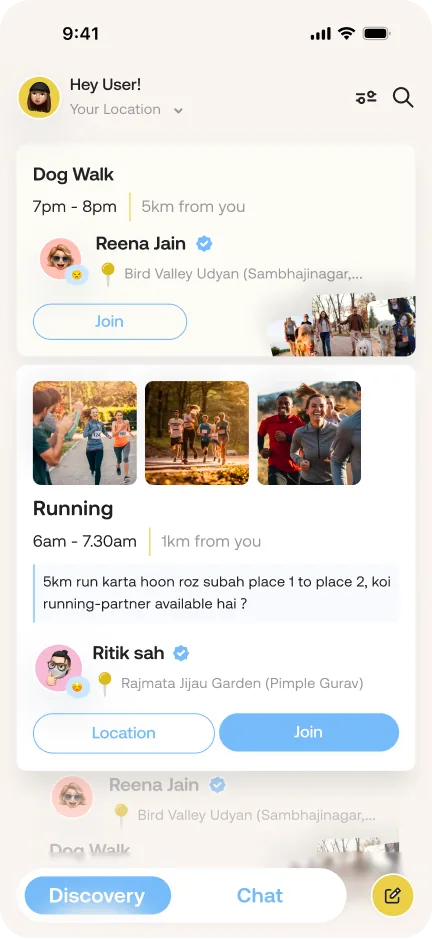
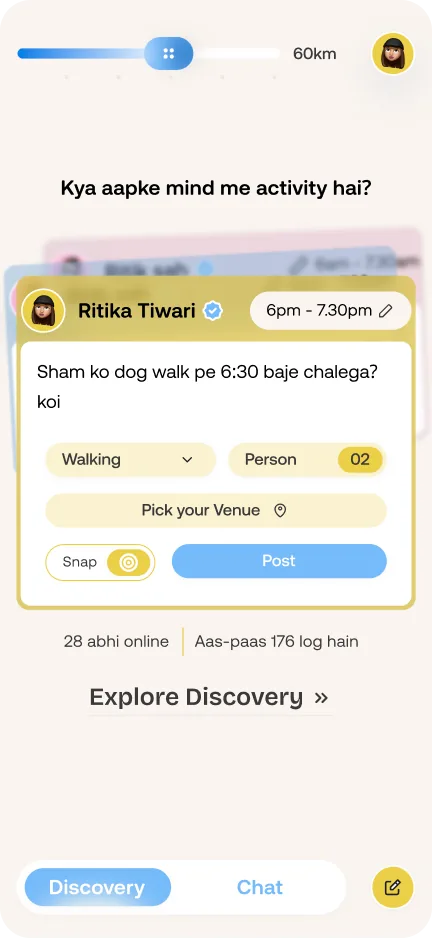
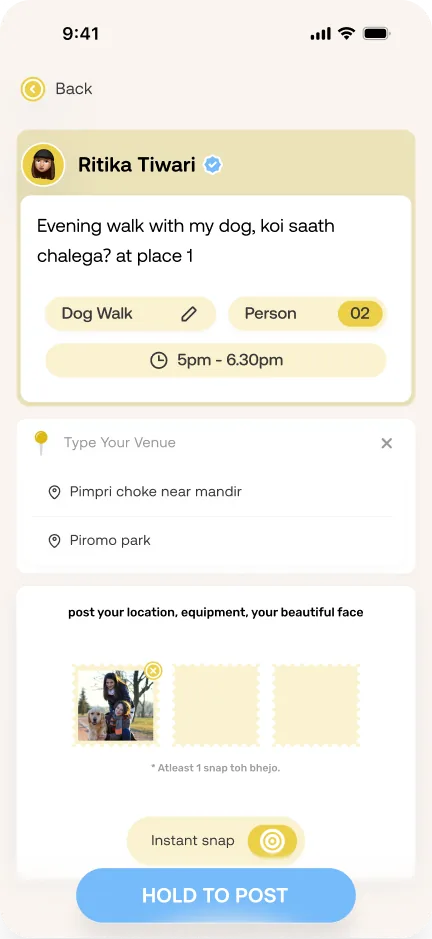
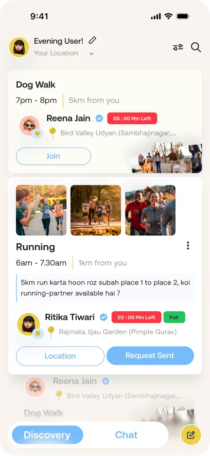
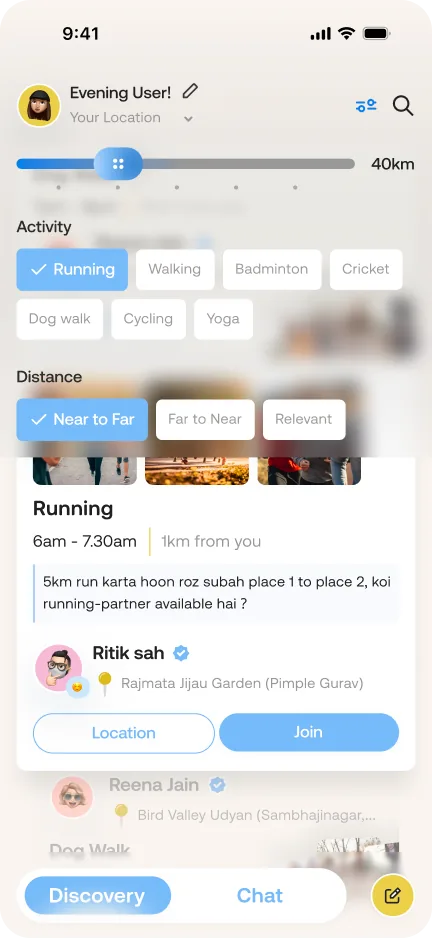
Lessons
Deciding what not to show was the hardest part. Every card had to answer "should I join?" in a glance, so I split information into what comes first and what can wait.
People choose better when they can compare. Cards moved from a plain scrolling list to a more interactive scroll that always shows at least two plans, so users can pick instead of settling.
An empty feed needed as much design as a full one. Planning for zero plans nearby shaped the first screen more than any card did.
Search and filters quietly teach the app. What people look for and filter by says more about their taste than any signup question could.
Future Updates
A space for hosts. Right now a host posts a plan and it gets lost in the feed. A dedicated section will let them track requests, manage their plans and host more than one activity.
Test the first time experience. With real users, I want to see where they get stuck on their first post and first join, how long it takes, and how they expect the flow to work.
Conversation glimpse
Chat isn't here to make friends, it's here to make the plan happen. The screens stay familiar so nobody has to learn anything new. What changed is the structure: a request until the host says yes, a group chat after, and gone a day later.
What I found
A request thread felt safer than an open inbox. Hosts decide who joins before anyone can see the group or message them.
A landmark felt more familiar than a pin on a map. Newcomers find the spot faster, and nobody has to share their live location.
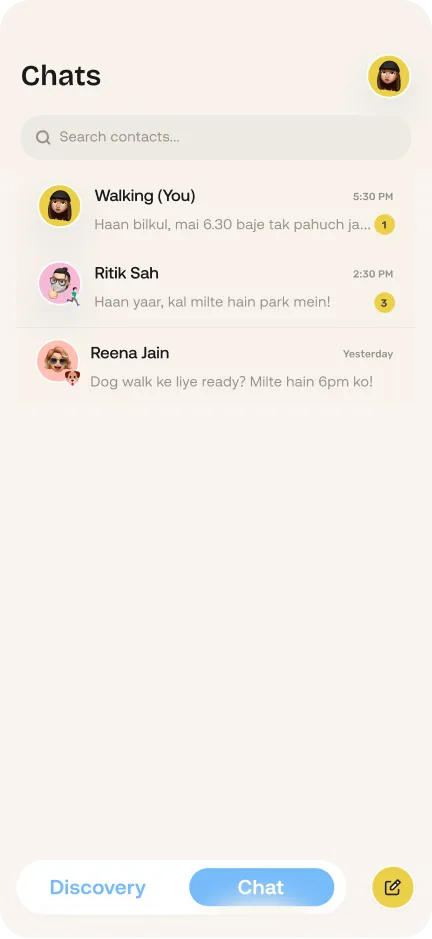
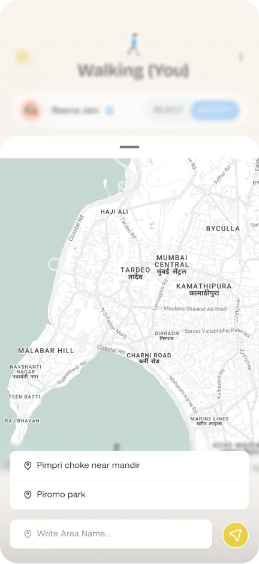
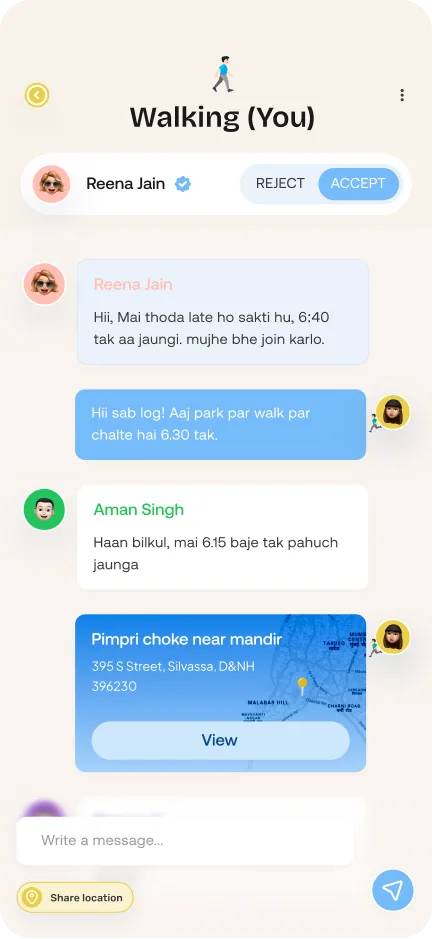
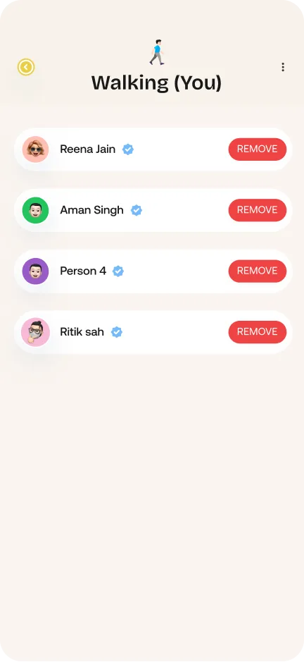
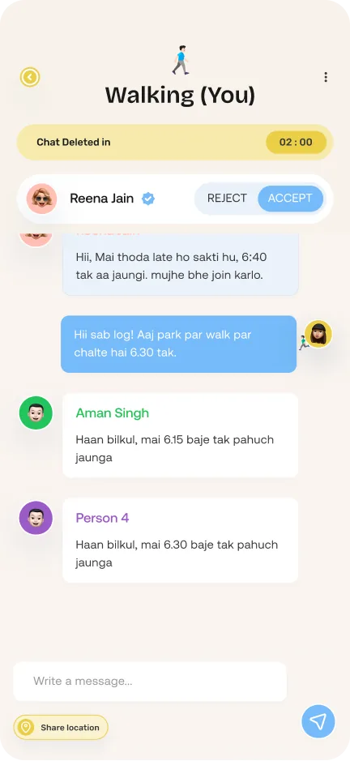
Lessons
Edge cases took more thinking than the screens. Failed messages, suspicious messages and host controls shaped most decisions.
Hosts stay in control. Anyone can message the host, but only the host can let them into the group.
Chats need time to wrap up. A 5 to 10 minute buffer after the plan ends lets the group say bye before the chat closes.
Future Updates
Separate spaces for hosting and joining, so each plan is easier to manage and track.
Iterations & Edge cases
Same plan, same rules
The quick post on the first screen skipped the venue and live snaps that the full post asked for, so some plans were half done. Now both ask for the same details, and every plan is complete however it's posted.
The feed changed too. It used to be a long scroll with the host's name first and a distance slider always on top. Now each card starts with the activity, and you swipe up and down to compare two or three plans while the current one stays in focus. "Join" sends a request to the host, and distance and activity filters open from one icon only when you need them.
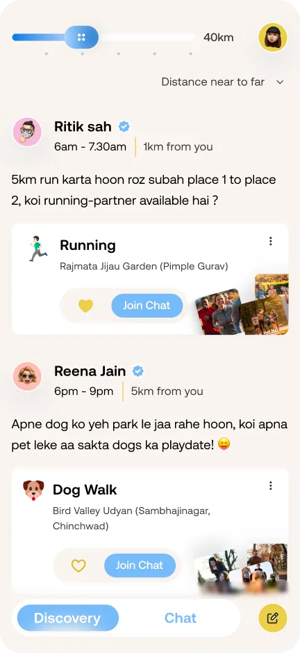
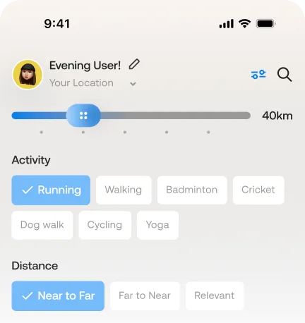
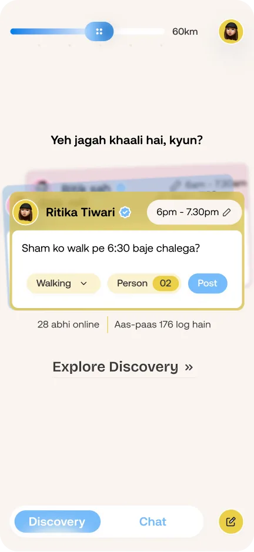
Safety starts at signup
Nook is about meeting strangers, so signup now has one checkbox: you confirm you're 18 or older and understand that misuse has consequences. One tap, not a terms page.
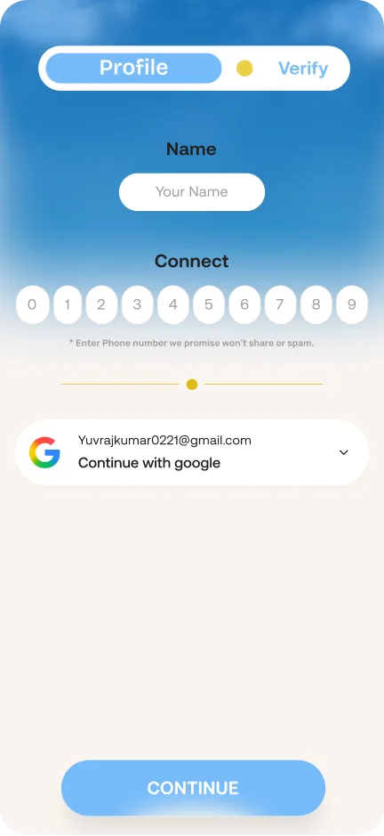
What happens when things go wrong
Nothing breaks the flow: an empty chat list points you straight to Discovery.
You stay in control: a failed message stays in place with a Retry button, you can report a group if the host removes you, and messages with suspicious words or links are stopped before they're sent.
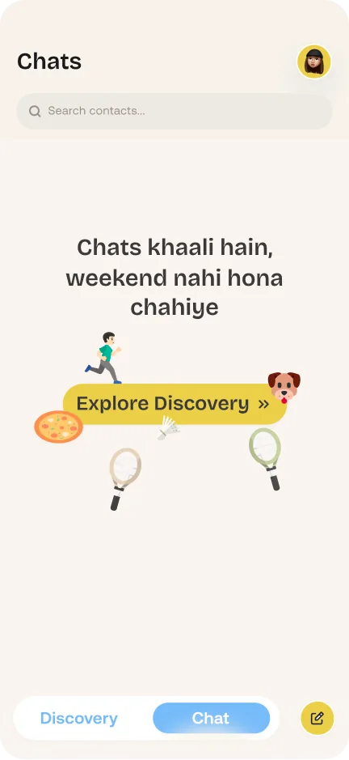
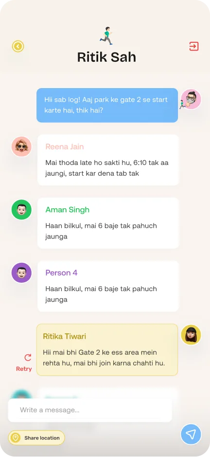
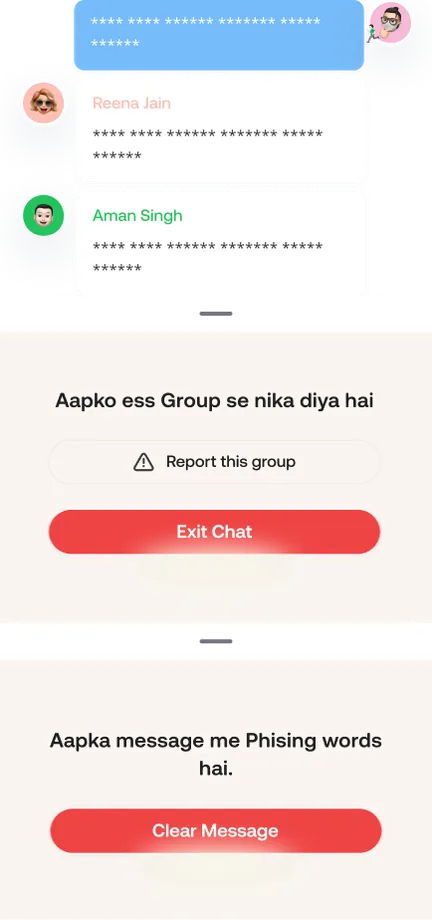
Reflection
In a one month sprint, Nook went from a Saturday evening thought to 30+ screens and 3 complete flows. The biggest lesson was that trust isn't one feature. It came from many small choices: no faces, a short note, live snaps, and a host who says yes. I haven't tested it with real users yet, so my next step is to watch where people hesitate on their first post and their first join.
Perspective
“Remember when a friend just knocked and asked, 'khelne chalega?' Nook brings that back, for grown-ups”